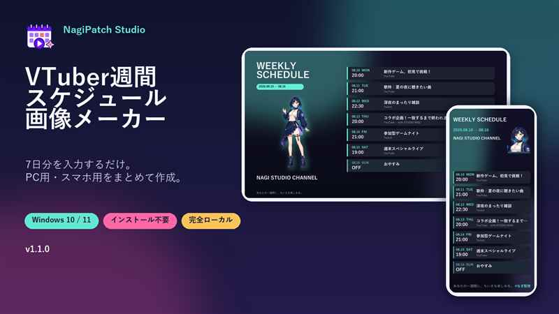

予定入力は一度
日付、開始時刻、タイトル、配信先、コラボ相手を7日分まとめて管理します。
VTUBER SCHEDULE PUBLISHER LOCAL
7日分の予定を一度入力し、PC用1920×1080とスマホ用1080×2400のPNGを一括作成。無料版で実際の操作と出力を確認できます。
Windows 10 / 11 x64・ログイン不要・インストール不要・ネットワーク通信なし

WHAT IT DOES
日付、開始時刻、タイトル、配信先、コラボ相手を7日分まとめて管理します。
PC用とスマホ用のプレビューを見ながら、文字と立ち絵の重なりを確認できます。
位置、拡大率、回転、四辺トリミングを横長・縦長で個別に整えられます。
画像と入力内容を外部へ送らず、ログインやネット接続なしで使用できます。
FREE OR PAID
基本の画像作成は無料版で確認できます
まず試す
0円
表現を広げる
980円
スマホ用画像も作成できますが、アプリ自体はWindows PC専用です。商品画像の立ち絵は使用例で、配布ファイルには付属しません。
QUESTIONS
はい。Midnight Neon 1テーマで、PC用・スマホ用PNGを作成できます。
はい。無料版で保存した .vtsschedule 設定ファイルを有料版で読み込めます。
送信されません。ログイン不要・ネットワーク通信なしのローカルアプリです。